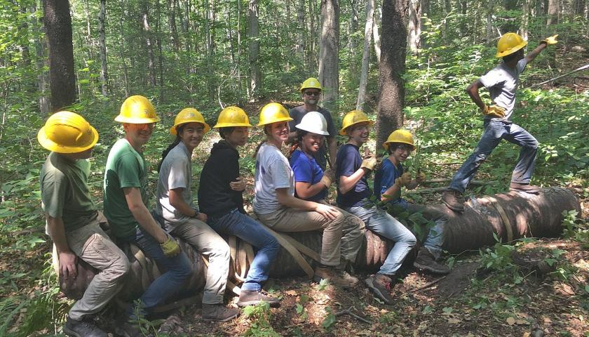

Citizen's Climate Lobby
is a place to learn about how you can help battle climate change. It's
all across the United States. Help our climate be better again!
Tree people
is a place to help take care of the environment. TreePeople's mission is
to inspire, engage and support people to take personal responsibility
for the urban environment, making it safe, healthy, fun and sustainable
and to share our process as a model for the world.

The Ocean Cleanup
is a place where either you could donate to or help clean up the ocean.
Volunteering would help them have more people to clean up the ocean
pollution, but many people who are not living near the ocean could donate.
The Ocean Cleanup, a non-profit organization, is developing and scaling
technologies to rid the world's oceans of plastic. Our aim is to put
ourselves out of business once the oceans are clean.